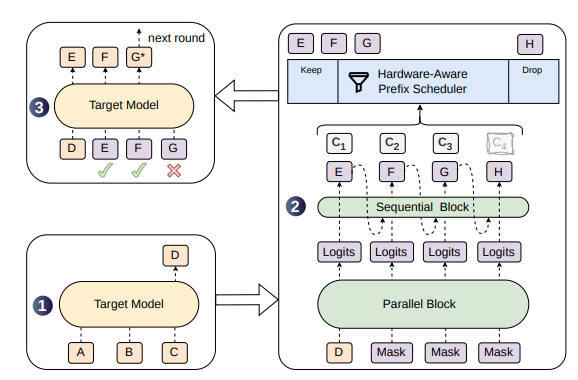
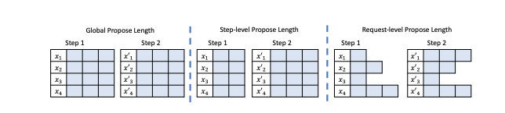
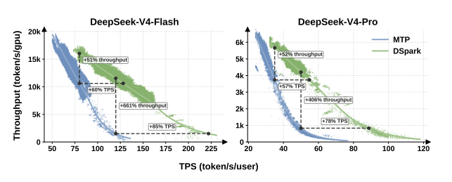

Paper Notes: dSpark
last updated 2026-08-13
When it came out, dSpark was all over my timeline. It got a lot of love just for being a DeepSeek paper, but it does bring together some interesting ideas into a single cohesive package.
Overview
dSpark is a “semi-autoregressive” speculative decoding approach from DeepSeek. like EAGLE-3 and dFlash, it is a small transformer model trained to use the hidden representations from specific layers of the model to predict the next several tokens.
In spite of most of the architecture being dFlash, there are 2 things that make dSpark unique:
- the small autoregressive head they place on top of the diffusion model to improve predictions; this can be either an RNN or a bigram head with a transition matrix; and
- the confidence predictions that they use to do “hardware-aware” dynamic length speculation.
The architecture (from the paper) is below:

The speculative decoding model (right) uses a parallel block (aka dFlash, or a diffusion language model) to jointly predict all future tokens at once. Then, a lightweight sequential block (which is what makes their approach “semi-autoregressive”) is used to refine those predictions left-to-right.
In addition to predicting the next tokens (E, F, G, H), the model also predicts the probability that each token will be accepted, conditioned on the previous token being accepted.
Semi-Autoregressive
Personally, I like the semi-autoregressive head, which fixes a lot of the issues I noticed with dFlash. I wrote a library, specspecs, that allows you to visualize what speculative decoding heads output. If we look at a draft from dFlash, which predicts all tokens in parallel:

We see unrealistic sequences of tokens: what reasonable model would predict ** followed by **) followed by **). If you know what token you’ve committed to at the previous timestep, which autoregressive models do, you wouldn’t make this kind of mistake.
So by introducing a small autoregressive head on top of dFlash, you don’t slow down generation too much, but you can create more accurate drafts.
Dynamic Speculation Depth
The other bit of magic of dSpark is that they can use that confidence to dynamically alter the lengths of their draft proposals. Note that this is not purely novel in and of itself, there are other papers that propose similar approaches like Goodput and ECHO (from Qwen).
But it’s a good idea! Consider the following figure from the goodput paper:

Traditional approaches to speculative decoding use a global propose length, i.e., every sequence sends the same number of tokens to the large model for verification.
However, if a token is unlikely to be accepted, and especially if you your service is under a lot of load, then speculation is wasted compute you can’t afford. The goal is to figure out an optimal request-level propose length that makes best use of available compute.
To learn more about how speculation trades off breadth for depth, I wrote Don’t Diffuse, Speculate!. But basically you can either send a lot of chats through at the same time (high concurrency) or make lots of progress on a small number of chats at the same time (deep speculative propose lengths), but not both.
dSpark navigates this trade-off using two pieces of information:
- how much load is the service currently under
- how likely is each token to be accepted
If the service is under light load, you can send through lots of unlikely tokens and still get a win if any of them get accepted. If the service is under heavy load, you just focus on sending the likeliest sequences.
Measuring Load
At a high-level, the way they measure “current system load” is:
- they profile the hardware at different token batch sizes,
B - for each batch size, they compute the number of steps per second (
SPS) they obtain on the hardware - they store that curve as a function of
SPS(B), and use that when deciding whether to add a token to be verified
Results
The best thing about this paper (to me) is that they can actually measure the performance under real-world load, because they serve production traffic. At matched throughputs, they improve latency, and at matched latency, they improve throughput:

Relative to their previous approach using multi-token prediction (MTP), which they discussed in the DeepSeek-v3 technical report.
Can You Serve It?
To get all the benefits, you need both (a) trained dSpark heads for your model, and (b) an inference engine that can do the hardware-aware speculation depths.
I saw that vLLM, and the speculators library, now supports dSpark (which was not true when I originally started writing this. 😀)